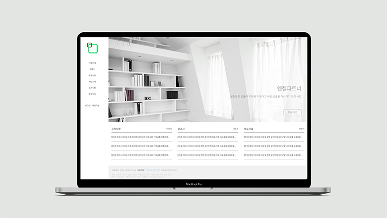
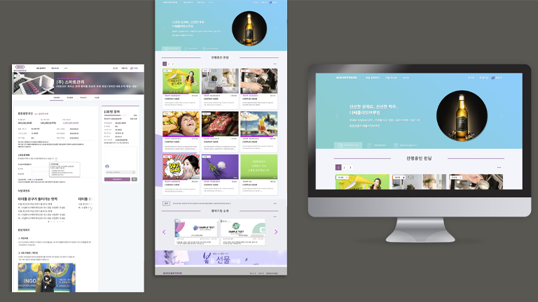
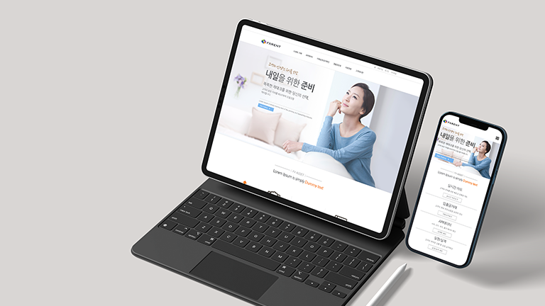

SLOG의 디자인일기
작업물
경력기술서
블로그
복잡한건 우리가
누구에게나 #쉬운디자인
#걱정하지마 #우주를 만들것도 아니고
경력기술서 보러가기
#쉽고 재미있는 디자인
#겨우 사람이 하는 일
#건강하게 휴식하기
#긍정 기록하기
유통사와 소비자에게 건강한 식품을 제공하는 식자재유통사업이다. 언제나 신선하고 정직한 재료를 공급한다는 의미
#디자인
#퍼블리싱

불평등한 법률피해를 지원하고 해당법률을 개선하기 위한 사업, 부드러운 화면전환과 인터렉션을 사용하여 모던한 고급스러움을 강조하였다.
#반응형
#디자인
#퍼블리싱

커뮤니티사이트와 증권형 크라우드펀딩을 결합한 사이트에 대한 요청이다. 많은 정보를 제공하기에 사용자의 시선을 유도할수있는 Flat한 card-ui 형태의 디자인을 채택하여 제작하였다.
#디자인
#상세페이지

소액제태크 투자자들을 위한 새로운 선물거래 RENT 서비스 사업. 신뢰감을 줄 수있는 화이트 베이스의 블루컬러의 컨셉으로 제작하였다.
#반응형
#디자인
#퍼블리싱